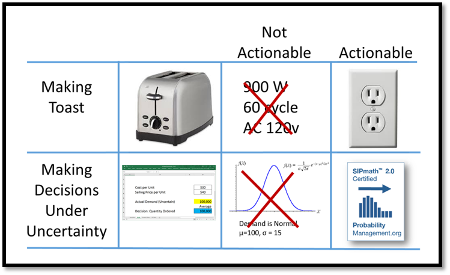
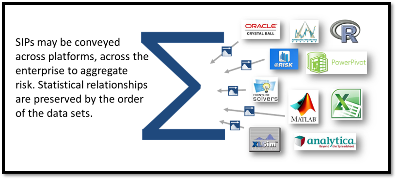
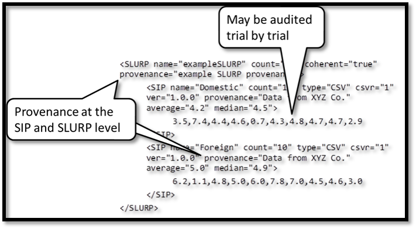
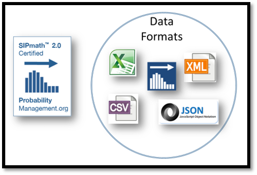

The open SIPmath™ 2.0 StandardThe Unambiguous Communication of UncertaintyIn the SIPmath Standard, uncertainties are communicated as data arrays called SIPs (Stochastic Information Packets). For example, the SIP representing the roll of a die would be expressed as thousands of outcomes, which could be stored in Excel or a database. The open SIPmath™ Standard enables legacy and future simulation models to communicate with each other, ushering in a new paradigm for enterprise risk management. SIPs advance the modeling of uncertainty in three fundamental ways. They are:Actionable Additive Auditable Agnostic A coherent set of SIPs that preserve statistical relationships between uncertainties is known as a Stochastic Library Unit with Relationships Preserved (SLURP). Vendors Supporting Probability ManagementSeveral vendors, listed below, have begun to explicitly support the discipline of probability management.Autobox, from Automatic Forecasting Systems - Click for videoThe first time series package to deliver simulated forecasts in the SIPmath standard. It will build a unique model for uni-variate and multi-variate data that separates the signal from the noise resulting in a more accurate and information laden model. Outliers and changes in Level/Trend/Parameters/Variance are identified and handled automatically.Analytica, from Lumina SystemsA powerful multi-dimensional modeling and simulation language. Calculates with the equivalent of SIPmath internally and supports many distributions for performing Monte Carlo. Can import and export SIPs to and from Excel.Decision Support Tools from Davies ConsultingDavies Consulting has developed tools and models to support Utility Asset Management and Emergency Management strategies. Davies partnered with several energy companies throughout North America to develop these decision support tools that provide recommendations based on the unique makeup of an organization.Crystal Ball, from Oracle CorpA powerful traditional Monte Carlo simulation package for Excel, with a broad user base. Supports many distributions. A macro to generate SIPs from Crystal Ball models is included in the SIPmath Modeler Tools.Risk Solver Platform, Frontline SystemsFrontline was the first vendor to support the ProbabilityManagement.org standards. Capable of interactive simulation and stochastic optimization on industrial sized problems, using both SIPs and internally generated random numbers from many distributions. |
|
Copyright © ProbabilityManagement.org 2014 To contact us, email Melissa@ProbabilityManagement.org